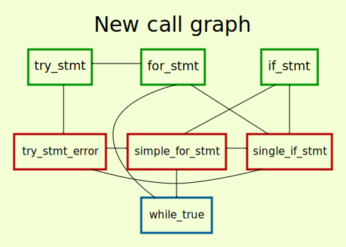

Which came first? The chicken or the egg?
This post discusses bootstrapping: the first step when trying to make something new. Bootstrapping is needed in many places.
What I'll call the "chicken or egg" problems happens in all of them although I'm writing this because I was faced with the fourth type and I want to make a suggestion of how to get around that problem in the third case.
Which came first? The chicken or the egg?
If its the chicken, where did it come from? Certainly an egg. If its the egg then what laid it? Surely a chicken.
This dilemma materialized to a concrete problem for bootstrapping. If I already had whatever it is I'm trying to make then it would be so much easier to make a second one. Not because of the experience earned by creating the first one, but because I could run the first copy to make the second copy.
For example, having a compiler running on some new hardware makes it much easier to get a second (different) compiler running because the first compiler could be used to compile the second compiler, instead of having to write it in something much more low level.
If an operating system is already running, its much easier to get it to do something else, like run things from a different OS.
Its much easier to add features to an existing language so it behaves like the new language I want than to implement the syntax and semantics of a language from scratch.
I'll now focus on a chicken or egg problem I faced when adding semantics to pymetaterp, a python (variant) interpreter.
Say I want to add if statements. Well, if I already had for and if statements implemented, it'd be easy to define them as
def if_stmt(*condition_and_blocks):
for condition, block in condition_and_blocks:
if evaluate(condition):
return evaluate(block)
"Check each condition in an if...elif...else block in turn and if it evaluates to True, run (evaluate) the block under that condition and stop (return)."
And the same goes for try statements
def try_stmt(block, handling):
try:
evaluate(block)
except Exception as error:
for exception_clause, except_block in handling:
if type(error) == evaluate(exception_clause[0]):
evaluate(except_block)
return
But even supposing the recursive calls to themselves was not a problem (by hard coding the effects of that single if and try statement), both of them contain a for statement, which we have to implement. Maybe something like
def for_stmt(index_var, iterable, block, else_block=None):
iterator = iter(evaluate(iterable))
while True:
try:
assignment(index_var, iterator.next())
except StopIteration:
if else_block is not None:
evaluate(else_block)
return
evaluate(block)
But now this depends on for_stmt and try_stmt (not to mention a while statement thrown in for good measure).
If I had none of these already, where can I even start?
A solution to the chicken or egg problem is also evolution's answer to the chicken or egg problem: something that's not quite a chicken laid an egg of something that's closer to a chicken which laid an egg of something that's even closer to a chicken and so on until we get the actual chicken [1].

Apply this to implementing a Python interpreter, instead of if_stmt, try_stmt and for_stmt, I will first have a copy of their simpler cousins single_if, try_stmt_error and simple_for_stmt and have the full versions call the simpler version.
def single_if(condition, block):
if_true = {True: block, False: `pass`}
evaluate(if_true[bool(evaluate(condition))])
single_if can only handle a single condition and a single block. [2]
def simple_for(index_var, iterable, block):
index = 0
iterable = evaluate(iterable)
length = len(iterable)
while True:
assignment(index_var, iterable[index], skip_eval=True)
evaluate(block)
index = index + 1
if index == length:
return
simple_for assumes the iterable is indexable and doesn't change length throughout the loop.
def try_stmt_error(error, handling):
simple_for exception_clause, except_block in handling:
if type(error) == evaluate(exception_clause[0]):
evaluate(except_block)
return
raise error
try_stmt_error is only the error handling portion of try_stmt, in case an error is actually raised while evaluation the main block. (Unfortunately, calls to it are handled by the interpreter internals [3].) [4]
As we can see from try_stmt_error, all three of if_stmt, try_stmt and for_stmt can be implemented by using only calls to their simpler versions single_if, try_stmt_error and simple_for_stmt and therefore breaking the cycle in their dependence.
(The while statement's implementation also has a simpler version while_true for when condition is always True and that's the only one we need here.)
This is also how the boot process works when a computer starts (more or less): a more featureful system is built from a simple one. And this is repeated a few times.
The same could be true for adding a feature to a language. Add something that's closer to the final result first and then use that to take the next step.
Sometimes, mutual dependence isn't a problem, except for being unable to run the entire system when completed. In fact, the first layer has to be built in one go.
But I find being able to run and visualize design and other errors to be extremely useful and am in favour of having a simple first layer with small differences between each.
In fact, the differences could just be a single command/statement each time.
For the compiler example, we use a compiler on an existing architecture to generate machine for the target new hardware. I.e., cross compile. This usually means being able to get something running much faster.
One downside is that its not possible to modify the bootstrapping process (by virtue of it not existing). Although this (now unnecessary) boostrapping process can also be re-created after something already runs on the new hardware. And creating the steps while the final product already exists is much easier.
In some sense, this is part of the solution I used to implement a Python interpreter. Since it was done in Python, the CPython interpreter was used to replace anything missing while implementing the other parts.
In general, this would mean to use something existing to make another copy of itself in a different context.
__getitem__ works, which won't be answered in this post.try_stmt was already a less powerful version of Python's try statement since all clauses had to name an exception type and it doesn't allow for a finally block.